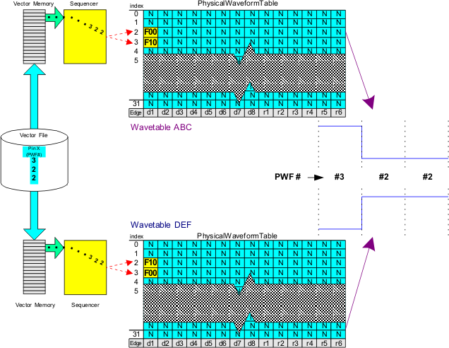
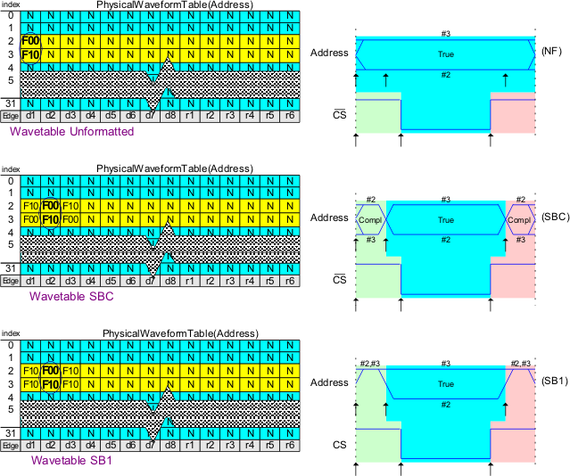

Wavetable compatibility for APG patterns
Using the correct or compatible wavetable when executing a pattern is very important. Perhaps the best way to illustrate this is to give an example of incompatible wavetables (see following figure).

The example shown above shows a vector file loaded into the vector memory and then executed using two different wavetables. This is a reminder that the contents of a vector file are a series of physical waveform Index numbers for each channel. The contents of the vector file have no meaning by themselves. At execution time the pattern selects a sequence of physical waveforms in the table. The resultant waveform applied to the pin of the device is dependent on the actions defined in the selected waveforms.
In this example the resultant waveforms are different. This is because the waveform definitions in each wavetable are not functionally compatible with each other. A good rule of thumb is to execute the pattern with same wavetable definition that the pattern was created with.
Now that the rule has been stated we will demonstrate how to bend the rule by developing functionally compatible wavetable definitions. A collection of Wavetable Sets can be designed which can provide any combination of formats on the address and data busses. If the Wavetable Sets are functionally compatible they can be used interchangeably with the same memory test pattern. To do so a little planning is required.
In the beginning of this section we discussed the three regions of a cycle, the pre-active region, the active region and the post-active region. The active region of the waveform is the functionally critical area from a device timing perspective. The information on the address and data busses must be True during their respective active regions. The information during the Pre-Active and Post-Active regions of the cycle can change without affecting the correct function of the operation taking place during the cycle. This is demonstrated in the figure below with a pin of the address bus and the CS pin.

In the examples above three different formats are defined in the wavetables. Providing that the timing edges are set to operationally valid locations the device will functionally operate the same for all three formats. The format states defined in the Pre-Active and Post-Active regions do not affect the operation of the device. Formats are used for testing purposes.
The Wavetables are functionally compatible because each table has compatible waveform definitions during the Active region. In each Wavetable definition physical waveform Index #2 is defined to drive a Logic 0 state and physical waveform Index #3 is defined to drive a Logic 1 state during the Active region. Since the wavetables are functionally compatible with each other then they can each be executed with the same pattern and expect the same functional operation of the device.
It is possible to define a Wavetable with either logical based syntax or physical-based syntax. As long as the resulting definitions of the waveforms in the physical wavetable meets the requirements in the previous paragraph they are compatible. That is to say following this convention provides compatibility between wavetables regardless of which syntax is used to define them.
As previously mentioned the pattern is stored as a sequence of physical waveform DC/DC power units. With this compatibility methodology in mind we can now say that a pattern is stored as a sequence of active region physical waveform DC/DC power units. Another way to look at this is that the pattern is defined without consideration to the format but only with consideration to the True Information to be used during the active region. The format is determined by the waveform definitions in the physical waveform table.
This methodology combined with the flexibility of the V93000 test system timing system provides a means to create a library of Wavetable definitions. The naming convention used needs to be flexible enough to allow the user to quickly identify the needed format from a list of Wavetables. The following convention uses a three character sequence to define the format, one for each region.
Wavetables are named with three-character combinations, for example, 0T0, CTC, 1TM, TNN. Each character indicates a logical action that is assigned to a particular tester edge:
- The first character indicates the action assigned to the edge at the beginning of the pre-active region.
- The second character indicates the action assigned to the edge at the beginning of the active region.
- The third character indicates the action assigned to the edge at the beginning of the post-active region.
These logical actions can be assigned to edges:
- N: No action, continue previous action
- 0: Drive logical 0
- 1: Drive logical 1
- T: Drive true information
- C: Drive complement information
- M: Drive mid-level termination
- R: Real-time compare true information
The format includes three characters to describe the action in all three regions. As previously mentioned the "Surround by" formats require three edges during the cycle and the "Return To" formats only require two edges as they do not define an action at the beginning of the cycle. And the No Format waveform only requires one test system edge. With this naming convention the name will always contain 3 characters. A No Format waveform which uses only one edge could be represented as TNN or NTN or NNT. The position of the T in the name determines how much delay occurs before the True information is driven and held through the rest of the cycle. The TNN format is the most common "No Format" name as it drives True Information through the entire cycle.
The title of a Wavetable should include the key differentiators of the waveforms defined in the table. The formats of the key busses are key differentiators in a library of format compatible Wavetables. For the SRAM the key busses are the address bus and the data bus. It is possible to define a different format for each of the operations defined in a Wavetable, in this case the operations write and read. The following is an example of a Wavetable title which uses this convention.
WAVETBL "aw=ctc/ar=ctc/dw=tnn pts (ls)"
In the title we can see the three letter waveform names four times. Once for the address bus during a write operation(aw=ctc), again for the address bus but during a read operation(ar=ctc) and then once for the data bus during a write operation(dw=tnn). The data bus during a read operation is not listed as it is the same for all of the Wavetables. To minimize the title length it just needs to list the differentiating parameters.
The title also includes "pts" which is a note that the Wavetable is defined using Pseudo Timing Sets. Also the title includes "(ls)" which notes that the table is defined using the logical syntax. These are the differentiators for a library of compatible Wavetables for the SRAM device. The differentiators may be different for another type of memory device.